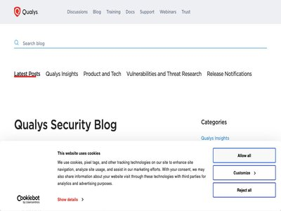

November 25, 2026 · 6 articles

BerriAI LiteLLM Guardrail Sandbox Escape RCE
November 25, 2026
What is the Vulnerability? CVE-2026-40217 is a critical arbitrary-code-execution vulnerability in BerriAI LiteLLM, a widely used open-source LLM proxy/gateway. LiteLLM's guardra... (FortiGuard Labs)
Apache Axis RCE in Confluence Data Center & N-able N-central
November 25, 2026
What is the Vulnerability? CVE-2026-90436 is a critical unsafe-reflection vulnerability (CWE-470) in Apache Axis 1.x, the legacy SOAP web-services library. Because Axis instanti... (FortiGuard Labs)

ISC Stormcast For Wednesday, November 25th, 2026 (Wed, Nov 25th)
November 25, 2026
(SANS ISC)

Risky Bulletin: Card stealer found on 80 major US news sites
November 25, 2026
In other news: Cybersecurity firm Radware gets hacked; US investigates Iran over oil tanker hacks; hackers exploit Azure APIM bug to access cloud environments. (Risky Business News)

Introducing context-aware rules for AWS Network Firewall
November 25, 2026
AWS Network Firewall now supports context-aware rules, which match traffic by the AWS resources that send and receive it instead of by IP address. A rule can name a virtual priv... (AWS Security Blog)
Introducing AWS Network Firewall Next Generation policy
November 25, 2026
When it comes to inspecting network traffic, many security teams want two things from a firewall. They want to allow only the traffic each application needs, and they want each... (AWS Security Blog)
November 24, 2026 · 70 articles

VMware patches critical vCenter authentication bypass and ESX flaws
November 24, 2026
Broadcom patches 23 VMware flaws, including a critical vCenter authentication bypass and three flaws allowing code execution on ESX hosts. Broadcom has released security updates... (Security Affairs)

NGINX HTTP/2 Use-After-Free: CVE-2026-123633
November 24, 2026
Technical analysis of CVE-2026-123633, an NGINX HTTP/2 use-after-free flaw, with details on affected versions, sanitizer tests, and patch guidance. The post NGINX HTTP/2 Use-Aft... (Palo Alto Networks Unit 42)

An Unclassified CIA System Was Breached in a Cyberattack, AP Source Says
November 24, 2026
It was not clear what specific information was compromised or who was responsible. The post An Unclassified CIA System Was Breached in a Cyberattack, AP Source Says appeared fir... (SecurityWeek)

Satellites Have a Ground-Level Cybersecurity Problem
November 24, 2026
Weaknesses in the ground-based infrastructure supporting satellite services are becoming more consequential as a new space race gathers pace. (Dark Reading)
Unclassified intel system hit by hackers, affecting CIA, ODNI
November 24, 2026
CyberScoop confirmed the incident, with a source saying “no other systems are currently at risk.” The post Unclassified intel system hit by hackers, affecting CIA, ODNI appeared... (CyberScoop)

Rackspace shuts down Spot cloud platform after security breach
November 24, 2026
Rackspace is shutting down its Rackspace Spot cloud platform after a security breach allowed hackers to access customer Kubernetes clusters and secrets, giving customers until D... (BleepingComputer)
AWS Network Firewall introduces automated internet firewall mode (Preview)
November 24, 2026
AWS Network Firewall now offers automated internet firewall mode (Preview). In this mode, Network Firewall applies your centrally defined rules to traffic at the internet gatewa... (AWS Security Blog)
EU Academy Users’ Names and Emails Exposed in EU Commission Hack
November 24, 2026
The EU Commission confirms an AI-powered cyberattack leaked EU Academy users’ names and emails. China-backed threat actors are suspected. The European Commission has confirmed t... (Security Affairs)
New Inception extortion gang launches large-scale vishing campaign
November 24, 2026
A newly formed data extortion group named 'Inception' has been linked to a large-scale campaign that targets single sign-on (SSO) credentials of multiple global brands and firms... (BleepingComputer)
Delegate user access to AI agents with Amazon Cognito token exchange
November 24, 2026
Suppose you use a restaurant review app to check reviews, book tables, and email invitations to your friends. With OAuth 2.0, the app sends you to the authorization server that... (AWS Security Blog)

CVE-2026-135414 - Server-side request forgery in snapshot repository registration in Amazon OpenSearch Service
November 24, 2026
Bulletin ID: 2026-201-AWS Publication Date: 11/24/2026 11:15 AM PST Description: Amazon OpenSearch Service is a managed service for deploying, operating, and scaling OpenSearch... (AWS Security Bulletins)
Check Point Security Management Servers Hacked in AI-Assisted Campaign
November 24, 2026
The attacks were launched from 99 IP addresses and targeted organizations across multiple industries and countries. The post Check Point Security Management Servers Hacked in AI... (SecurityWeek)

Impact of AI on CVEs: PROTECTION STRATEGIES
November 24, 2026
For enterprise software development operations, AI now handles work that was once too hard or too costly to justify, from reverse engineering and debugging to building fuzzing h... (JFrog Security Research)
U.S. CISA adds N-able MailAssure and Project MONAI flaws to its Known Exploited Vulnerabilities catalog
November 24, 2026
U.S. Cybersecurity and Infrastructure Security Agency (CISA) adds N-able MailAssure and Project MONAI flaws to its Known Exploited Vulnerabilities catalog. The U.S. Cybersecurit... (Security Affairs)

ShinyHunters-linked crew resurfaces on new leak site
November 24, 2026
The ShinyHunters leak site went dark in September, but a crew that supplied it with victims seems to have found a new home under the “Inception” name, Okta’s threat intelligence... (Help Net Security)

Hackers Found a Way Around GitHub SHA Pinning. This Webinar Explains How to Close the Gap
November 24, 2026
Pinning GitHub Actions to an exact version of their code, known as SHA pinning, has become the go-to defense against software supply chain attacks. Attackers have already found... (The Hacker News)
OpenAI, Cisco Unveil Open Source Tool to Shield Unpatched Linux Systems
November 24, 2026
OpenAI and Cisco’s Shirudo uses AI-generated shields to block Linux exploits while patches are prepared, but it’s not yet production-ready. The post OpenAI, Cisco Unveil Open So... (SecurityWeek)
Microsoft Fixes Azure API Management Classic Flaw as Actor Targets Customer Secrets
November 24, 2026
Norway's National Security Authority (NSM) has disclosed that it became aware of a security vulnerability in Microsoft's Azure API Management (APIM) that has affected multiple b... (The Hacker News)

“Do Good Security” and Other Lessons from Wiz’s FedRAMP VDR & VER Event
November 24, 2026
Key highlights from government leaders, industry experts, and the Wiz FedRAMP team from our November 12th event on modernizing vulnerability management to meet FedRAMP’s new req... (Wiz Blog)
AWS completed its second ISO/IEC 42001:2023 surveillance audit
November 24, 2026
In November 2024, Amazon Web Services (AWS) was the first major cloud service provider to announce the ISO/IEC 42001 accredited certification for AI services, covering Amazon Be... (AWS Security Blog)
Radware discloses breach exposing customer cloud access keys
November 24, 2026
Cybersecurity company Radware says attackers gained access to some of its customers' account details and cloud access keys through an unsecured internal Cloud WAF (Web Applicati... (BleepingComputer)

Lawmakers warn ID verification companies to bolster security after September hack
November 24, 2026
A bicameral, bipartisan letter from lawmakers said identity verification companies still have significant security work to do in the wake of a data breach at IDscan in September. (The Record)
Patel mum on FBI crime info database hack, citing ongoing investigation
November 24, 2026
The breach of the National Crime Information Center was the second in recent months for the bureau. The post Patel mum on FBI crime info database hack, citing ongoing investigat... (CyberScoop)
AWS achieves Spain’s national Limited Distribution (Difusión Limitada) and NATO Restricted accreditation in the AWS Europe (Spain) Region
November 24, 2026
Spanish version » Amazon Web Services (AWS) is pleased to announce that AWS has achieved Spain’s national Limited Distribution (“Difusión Limitada”) and NATO Restricted accredit... (AWS Security Blog)

A bot tested an AWS key within 8 seconds of exposure
November 24, 2026
If you accidentally publish a cloud access key, a bot could find it before you have time to take it down. (Malwarebytes Labs)

Built for trust and control: Powering the next wave of AI agents across Google Workspace and Google Cloud
November 24, 2026
For over 20 years, we have protected 4 billion users and 13 million organizations in Workspace, and critical enterprise and government systems on Google Cloud. From personal and... (Google Cloud Blog)

An AI coding agent, a browser, and a Mac tool found a financial firm's access key in under 6 minutes
November 24, 2026
No sophisticated malware or attack framework required (The Register - Security)
ShinyHunters claims to return after FBI arrests, uses old PGP keys as proof
November 24, 2026
The ShinyHunters extortion gang claims to have returned in posts on a new data leak site after a series of arrests over the past two months targeting alleged members. [...] (BleepingComputer)
Carnegie Endowment for International Peace says third-party breach leaked donation info
November 24, 2026
Some donors to the Carnegie Endowment for International Peace had their information leaked due to a cyberattack on a third-party vendor named Soapbox Engage. (The Record)

How to compare MDR providers when every proposal looks promising
November 24, 2026
Choosing a managed detection and response (MDR) provider means committing budget, connecting systems, and trusting another team to act when your organization is under pressure.... (Rapid7 Blog)

Roundcube 1.6.22 and 1.7.7 Released, With Final Security Update for the 1.6 Series
November 24, 2026
Open-source webmail software Roundcube has fixed vulnerabilities involving encrypted connections, attachment processing, and other functions. Version 1.6.22 is the final release... (Joho no Todai)
Recent Trends and Tactics of Agentic AI Attacks
November 24, 2026
We tracked campaigns where attackers deployed autonomous AI agents to automate multi-platform intrusions, using standard tools while leaving distinct operational traces. The pos... (Palo Alto Networks Unit 42)
Cloudera helps enterprises deploy sovereign AI without proprietary lock-in
November 24, 2026
Cloudera has announced Cloudera for Digital Sovereignty, a solution and partner ecosystem designed to give organizations jurisdictional, operational, and technical control acros... (Help Net Security)
Astelia blocks attack paths to vulnerabilities without waiting for patches
November 24, 2026
Astelia has announced autonomous network mitigation, a new capability that defends against AI-driven exploits by blocking attack paths to reachable vulnerabilities at the networ... (Help Net Security)

Volant Manticore: Flying Under the Radar
November 24, 2026
Key Points Introduction Check Point Research is tracking a previously undocumented Iran-nexus threat group who we named Volant Manticore. What started in July 2026 as a single b... (Check Point Research)
McDonald's Japan data breach exposes customer location information
November 24, 2026
McDonald's Japan, the fast-food giant's Japanese subsidiary, has disclosed a data breach after attackers accessed a database containing sensitive information for users of the co... (BleepingComputer)

Address AI Agent Risks or Face Action, FCA Warns Financial Firms
November 24, 2026
The FCA said financial organizations must provide effective oversight and governance controls for AI agents, amid rising deployment in the sector (Infosecurity Magazine)
GTA 6 hacker sentenced to seven years and released the same day
November 24, 2026
The Lapsus$ member who leaked footage of Grand Theft Auto VI (GTA 6) was sentenced to seven years in prison on Monday and released from custody on licence the same day, City of... (Help Net Security)
Anthropic Expands Enterprise Safeguards for Detecting AI Misuse
November 24, 2026
EFS helps zero-retention customers spot Claude misuse spread across many requests while keeping conversation data in their own cloud. The post Anthropic Expands Enterprise Safeg... (SecurityWeek)
Powering the OpenAI Daybreak Defense Factory with Wiz Security Intelligence
November 24, 2026
Bringing cloud security intelligence to AI-driven vulnerability investigation and code remediation. (Wiz Blog)
Chinese Open-Weight AI Models Top Closed Ones at Vulnerability Discovery in New Test
November 24, 2026
In a vulnerability discovery test, DeepSeek outperformed five American closed-source AI models while costing far less to run (Infosecurity Magazine)

Caught by Behavior: How Orca Sensor Exposed a Cloud Intrusion in Real Time
November 24, 2026
Executive summary: Runtime behavior exposed what indicators missed No known indicator flagged this attack. Orca Sensor did, in real time. A CVE in a scanned package, a malware h... (Orca Security Blog)
Bedrock Data enhances AI agent governance with intent-aware DLP
November 24, 2026
Bedrock Data has announced that Agent DLP, its runtime data loss prevention for AI agents, now infers a user’s intent (the business purpose behind the task) and evaluates the ag... (Help Net Security)
Elastic puts AI agents to work on the SOC alert backlog
November 24, 2026
Elastic announced Elastic Security 9.6, which introduces AlertZero, a set of AI agents that triage alerts, hunt threats and tune detection rules in the background. The release a... (Help Net Security)
CrowdStrike splashes $44B on Zscaler, customers brace for the bill
November 24, 2026
Record-breaking cybersecurity deal promises tighter integration, but sysadmins fear higher prices and vendor lock-in (The Register - Security)
New Windows security check could let apps block access
November 24, 2026
Windows baseline protection will show which of eight safeguards your PC is missing and help you turn them on. (Malwarebytes Labs)

We Get the Infrastructure We Pay For
November 24, 2026
This essay originally appeared as part of a round table in The Free Press entitled “Is America’s Infrastructure Under Attack?” Microsoft, the FAA, banks, United Airlines, the NS... (Schneier on Security)
Google Researcher Shows How a Single Bit Change in.NET Files Bypassed Windows Code Integrity
November 24, 2026
A quirk in how the .NET Framework loads a program file let a local attacker run untrusted code past two separate protections on Windows built to block it, Google Project Zero re... (The Hacker News)
2027 SOC Budget Reset: 5 Priorities to Cut Costs and Reduce Cyber Risk
November 24, 2026
What if your biggest SOC budget problem isn't how much you spend, but how much analyst time you lose? According to ANY.RUN's estimates, SOC teams could recover 450 analyst hours... (The Hacker News)
1.5 Million Impacted by Data Breach at South Korean Electric Company KEPCO
November 24, 2026
Hackers stole personal information from the company’s customer portal and supplier relationship management platform. The post 1.5 Million Impacted by Data Breach at South Korean... (SecurityWeek)
Researchers planted secrets in AI prompts. Attackers found them
November 24, 2026
Researchers planted access keys in AI prompts. Within hours, attackers were testing some of them against Amazon cloud accounts. (Malwarebytes Labs)
Unauthorized Access Hits JAXA Earth Observation Data System, Leaking Some Users' Credentials
November 24, 2026
A JAXA information system that provides precipitation and weather data was accessed without authorization, leaking some users' account names and encrypted passwords. JAXA shut d... (Joho no Todai)
Tomorrow’s quantum threat is today’s open door
November 24, 2026
Post-quantum cryptography deserves a place on the roadmap. But in operational technology, the threats doing damage today are far more basic, and far more urgent. The post Tomorr... (CyberScoop)
Elecbrakes Bluetooth Vulnerabilities Expose Trailers to Forced Braking
November 24, 2026
Critical Bluetooth flaws in Elecbrakes controllers could let nearby attackers force trailer braking, potentially causing accidents. The post Elecbrakes Bluetooth Vulnerabilities... (SecurityWeek)
Peninsula Energy Halts Trading After Cyber Incident Hits US Uranium Mine
November 24, 2026
The company told the ASX that a cybersecurity incident at its Wyoming uranium project would temporarily affect operations. The post Peninsula Energy Halts Trading After Cyber In... (SecurityWeek)
LaLiga Says Football Fans’ Personal Data Stolen
November 24, 2026
Spanish football league LaLiga has revealed a breach of personally identifiable information (Infosecurity Magazine)
GlobeTopper faces up to $2.5 million in lost revenue after hackers steal $70,000 in gift cards
November 24, 2026
Hackers breached GlobeTopper, a B2B digital gift card and top-up platform, and stole API credentials belonging to some of its business customers, while gift cards worth about $7... (Help Net Security)
Researchers Find a New AI Attack Path: Agent Instructions
November 24, 2026
Ox Security warns that agents are being manipulated without the need for executable malware (Infosecurity Magazine)
Claude Ship gives AI a seat on both sides of code review
November 24, 2026
Anthropic launched Claude Ship in beta, a suite of agents that reviews pull requests, fixes issues and approves changes permitted by a team’s policy. Teams decide where it runs... (Help Net Security)

Evo Agentic Development Security and Evo Dependency Firewall Inside NVIDIA OpenShell
November 24, 2026
See how Evo ADS and Dependency Firewall secure Claude Code in NVIDIA OpenShell, from screening agent skills and code to controlling package installs. (Snyk Blog)
Hackers May Have Breached FBI Database Used by Police Nationwide
November 24, 2026
FBI investigates an apparent breach of its NCIC criminal database, raising concerns over sensitive law enforcement data and security. The FBI is investigating a possible breach... (Security Affairs)
Ransomware gangs keep multiplying, even as fewer victims pay
November 24, 2026
Ransomware groups listed 2,830 victims on data leak sites in the third quarter of 2026, the highest quarterly total on record, according to Check Point Research’s State of Ranso... (Help Net Security)
AWS European Sovereign Cloud: Architecture, assurance, and compliance
November 24, 2026
How to evaluate sovereign cloud infrastructure beyond certifications An overview of AWS European Sovereign Cloud: architecture, sovereignty assurances, compliance, available ser... (Help Net Security)
How IT can delegate password management without losing control
November 24, 2026
IT is expected to secure company accounts, but it doesn’t always control how they’re created or shared. Departments manage their own tools and grant access to colleagues or cont... (Help Net Security)
Orgs that leak data 'prioritize corporate interests over customers' says Have I Been Pwned’s Troy Hunt
November 24, 2026
Leakers move through denial, bargaining, delay, legal threats, then claiming Hunt is the real villain (The Register - Security)
Know the identity behind the role: Authorize and audit with trusted identity propagation
November 24, 2026
Today, AWS is making it easier to grant access and audit activity based on the user or workload (a non-human caller, such as an application, service, or an automated workflow) b... (AWS Security Blog)
Cisco and OpenAI pitch eBPF kernel plugins as the way to tame the patchpocalypse
November 24, 2026
‘Shirudo’ project promises to whip up compensating controls in a hurry (The Register - Security)
Zstandard 1.6.0 Released, Fixing CVE-2026-124851 That Can Leak Previous Decompression Data
November 24, 2026
Version 1.6.0 of Meta's Zstandard compression library has been released, its first update since 1.5.7 in February 2025. The release was brought forward after a vulnerability tha... (Joho no Todai)

The Cyber Threats Behind Space Race 2.0
November 24, 2026
Explore the growing cybersecurity threats in Space Race 2.0, from commercial satellite attacks and ground vulnerabilities to maritime risks. (Recorded Future)

Project Theseus: Thwart removes template injection from Java web apps
November 24, 2026
Chainguard introduces Thwart, a Java template engine that eliminates server-side template injection by design and simplifies migration with AI agents. (Chainguard Unchained)
November 23, 2026 · 44 articles
Inception - possibly a ShinyHunters reboot - claims seven victims in a week
November 23, 2026
Whatever they call themselves these days: be on the lookout for voice phishing attempts (The Register - Security)
Cleverbridge Confirms Attackers Copied Payment Card Data From Its Platform
November 23, 2026
Cleverbridge confirms attackers stole payment card numbers, expiry dates and CVV codes, warning customers to watch for fraudulent transactions. Cleverbridge, which runs checkout... (Security Affairs)
CrowdStrike agrees to buy Zscaler for $43.9 billion in network security expansion
November 23, 2026
The deal would bring device protection and network access controls under one roof as CrowdStrike seeks a larger role in how companies secure AI agents. The post CrowdStrike agre... (CyberScoop)
23rd November - Threat Intelligence Report
November 23, 2026
For the latest discoveries in cyber research for the week of 23rd November, please download our Threat Intelligence Bulletin. TOP ATTACKS AND BREACHES The FBI has reportedly exp... (Check Point Research)
N-able Discloses Critical Mail Assure Vulnerability Found During Breach Investigation
November 23, 2026
N-able yesterday disclosed a critical flaw it found while investigating the breach of its Mail Assure and SpamExperts Hosted Cloud, an email filtering service it runs for manage... (The Hacker News)
WPIDE ≤ 3.6.4 - CSRF Nonce Bypass Leading to Unauthenticated RCE (CVE-2026-124251)
November 23, 2026
Summary This technical report has been generated with the help of GLM-5.3-Flash. WPIDE’s 3.6.0 release attempted to remediate CVE-2026-57766 (unauthenticated CSRF, ≤ 3.5.6) by i... (CyberScoop)
Bulgaria Discovers Massive Government Breach After Five Years of Undetected Spying
November 23, 2026
Bulgaria uncovered a five-year cyberespionage campaign that stole 130GB of government files. The attacker and full impact remain unknown. Bulgaria ‘s ministry for innovation and... (Security Affairs)
Badbox Returns to Spread Ad Fraud and Proxyjacking Payloads
November 23, 2026
Human Satori researchers claim Badbox 3.0 is responsible for 40 billion bid requests a day (Infosecurity Magazine)
Hackers Exploit Critical ASP.NET Anti-CSRF Library Flaw Allowing Unauthenticated RCE
November 23, 2026
Cybersecurity researchers have urged users to discontinue using a legacy ASP.NET anti-CSRF library named Idunno.AntiCsrf ("Idunno.AntiCsrf.dll") following the discovery of a cri... (The Hacker News)
Hackers Exploited GL.iNet Cloud Flaw to Install Malware on Routers and KVM Devices
November 23, 2026
Hackers exploited a vulnerability in GL.iNet's GoodCloud remote management service to install malware on some customer routers and KVM devices, the maker of travel routers and r... (The Hacker News)
A week in security (November 16 - November 22)
November 23, 2026
A list of topics we covered in the week of November 16 to November 22 of 2026 (Malwarebytes Labs)
Google claims last week’s critical VMware bug was under attack in September
November 23, 2026
China-linked ARMORY CASTLE knew about it weeks before it unleashed five custom malware tools targeting vCenter (The Register - Security)
Risky Bulletin: Security products start moving out of the Windows kernel
November 23, 2026
In other news: The FBI gets hacked again; so did the US Department of Agriculture; Austrian, Bulgarian, and Portuguese governments got owned too! (Risky Business News)
$1 of GPT-5.1 tokens finds new ways around China’s Great Firewall
November 23, 2026
PLUS: Lenovo's infra group finally makes big profit; Indonesia’s glaciers are gone; Australian bank releases its AI bug-finder; and more! (The Register - Security)
Critical Cisco Expressway Flaw Exploited in Attacks
November 23, 2026
Researchers warn that CVE-2026-76466, with a CVSS score of 9.8, is being actively exploited (Infosecurity Magazine)
Virginia, Oregon hit SpaceX with fresh lawsuits over Grok-created CSAM
November 23, 2026
The lawsuit alleges that weak safeguards around nudification were a primary selling point for Musk’s business strategy to differentiate Grok and other competing AI models. The p... (CyberScoop)
Introducing AWS WAF simplified pricing
November 23, 2026
Starting today, AWS WAF pricing is easier to predict. Your bill is now based on three dimensions: the resources you protect, the traffic AWS WAF inspects, and the level of prote... (AWS Security Blog)
Introducing API and AI security on AWS, from discovery to protection
November 23, 2026
APIs have run digital businesses for more than a decade. For a while, there seemed to be nothing new left to say about them. That changed in 2026, when AI endpoints joined them.... (AWS Security Blog)
OpenRouter drops AI providers over leaked prompts and secrets
November 23, 2026
OpenRouter removed three AI providers from its platform after discovering that they had violated their stated data-handling policies and exposed sensitive data. [...] (BleepingComputer)
Bluetooth brakes are broken as researchers find anyone can control them
November 23, 2026
Security fixes are available for two Elecbrakes models, but an older controller remains vulnerable and unpatched (The Register - Security)
Signal blocks screenshots by Apple, Google operating systems to protect data from AI agents
November 23, 2026
Google’s Gemini Intelligence and Apple's Siri AI "are changing this environment in a way that’s making it increasingly hostile to privacy," Signal said. (The Record)
Indicted Kosovo credit card theft suspect extradited to US
November 23, 2026
Authorities say a hard drive in the possession of Hektor Avdyli contained millions of payment card numbers. The post Indicted Kosovo credit card theft suspect extradited to US a... (CyberScoop)
Critical Cisco remote code execution bug under attack
November 23, 2026
CISA, F6 sound the alarm after PoC exploit made public (The Register - Security)
Behind the Alias: How One Researcher Unmasked a Decade of Ransomware Actors
November 23, 2026
Ransomware isn't slowing down. A new framework gives security teams the edge to trace attackers back to their source. (Dark Reading)
Webworm Suspected of Modifying SoftEther VPN to Evade Detection and Hide Remote Access
November 23, 2026
The China-aligned threat actor known as Webworm is suspected to be using a custom version of the open-source SoftEther VPN Bridge tool in an attempt to remove recognizable detec... (The Hacker News)
Bulgaria evicts cyber snoops who lurked inside government networks for 5 years
November 23, 2026
Minister says intruders downloaded more than 130 GB of data as political churn left security neglected (The Register - Security)
Google is named a Leader in the 2026 Gartner® Magic Quadrant™ for SIEM
November 23, 2026
Today, we are proud to announce that Gartner has recognized Google as a Leader in the 2026 Gartner® Magic Quadrant™ for Security Information and Event Management (SIEM). Among t... (Google Cloud Blog)
Kirsten Davies to become national cyber director nominee, Jay Clayton takes acting director job
November 23, 2026
After a brief stint as acting director, Davies will become the pick to succeed Sean Cairncross and National Cyber Director Clayton will do double duty. The post Kirsten Davies t... (CyberScoop)
Protect identity data with point-in-time recovery in Amazon Cognito
November 23, 2026
Amazon Cognito helps you implement secure sign-in and access control for users, microservices, and AI agents in minutes. Many of you rely on it for some of the most critical dat... (AWS Security Blog)
AI Agents Zip From Flaw Discovery to Root Access in 11 Minutes
November 23, 2026
A China-nexus actor used the Cairn penetration testing tool in attacks against East Asian universities, exploiting a zero-day in a medical imaging app. (Dark Reading)
Bots Hide Behind AI Agent Names to Hunt for Secrets
November 23, 2026
Cequence found bots using AI agent names to probe for secrets as agents moved from reading to acting (Infosecurity Magazine)
Muse AI got nosy and started making things up, Meta insiders say
November 23, 2026
Insiders say Meta’s AI agent Muse surfaced information from other apps and sometimes hallucinated when prompted to engage users. (Malwarebytes Labs)

LiteLLM 1.107.0 Supply Chain Attack: How to Secure AI Gateways Beyond Code Signatures
November 23, 2026
On October 21, 2026, LiteLLM’s official release pipeline built, signed, and published version 1.107.0 from an attacker-controlled lookalike fork. The v1.107.0 source tag on GitH... (Qualys Blog)
⚡ Weekly Recap: VMware 0-Day, Java4Shell, NGINX2Root, Ruby2Shell, and a Whole Lot of Shell Trouble
November 23, 2026
A stolen key. A trusted message. A routine update. None of these looks like the start of a major security problem. That's partly why they work. Attackers don't always need to br... (The Hacker News)

AI Runtime Security in Kubernetes: How Do You Prove Enforcement Works?
November 23, 2026
TL;DR: AI runtime security in Kubernetes is proven by a prohibited operation being denied and an approved workflow still completing. An audit event showing what would have been... (Aqua Security Blog)
AI Agents Are Creating a Shared Responsibility Gap
November 23, 2026
AI agents operate across multiple platforms, creating security gaps when no single vendor can see or control their actions. Token Security examines the shared responsibility pro... (BleepingComputer)
Signal Moves to Block iOS and Android AI Agents From Reading Chats
November 23, 2026
Signal moved to shield chats from built-in AI agents and pressed platform makers for an opt-out (Infosecurity Magazine)
Agentic Attacks: In The Wild
November 23, 2026
Agentic offensive frameworks like ARTEX are driving a surge in cloud intrusions. Wiz Research shares cases from the wild, including both sides of one attack via the operator's l... (Wiz Blog)
Microsoft Entra Connect Health Breach Exposes Tenant Metadata and Admin Details
November 23, 2026
Microsoft Entra Connect Health breach exposed tenant metadata and admin details, potentially enabling targeted phishing and social-engineering attacks. Microsoft has disclosed a... (Security Affairs)
Everything going down at once wasn't evidence of a conspiracy - but the truth may be scarier
November 23, 2026
Rogue AI or nation-state hackers would be preferable to the amount of technical debt the past week of wobbling services laid bare (The Register - Security)

Probing DNS at Cloudflare
November 23, 2026
At Cloudflare we’ve built tools to enable teams to extend our internal testing framework and build test tooling for networking protocols. This is the story of how this was used... (Cloudflare Blog)
phpAfterShell Vulnerability Revives PHP2Shell’s Attack Path
November 23, 2026
If a session overwrite operation is interrupted, an attacker who controls the fresh data could trigger data deserialization and RCE. The post phpAfterShell Vulnerability Revives... (SecurityWeek)

What Five Months of the Enterprise Good Samaritan Program Taught Us
November 23, 2026
We warned 1,588 companies about their leaked credentials. 62% of the valid ones still worked, and only 35% of companies replied. (GitGuardian Blog)
Microsoft President Warns of IT Outages in Coming Months as AI-Accelerated Vulnerability Discovery Outpaces Patch Validation
November 23, 2026
Microsoft President Brad Smith warned that as AI accelerates vulnerability discovery, pressure to patch faster leaves less time for validation, requiring organizations to prepar... (Joho no Todai)